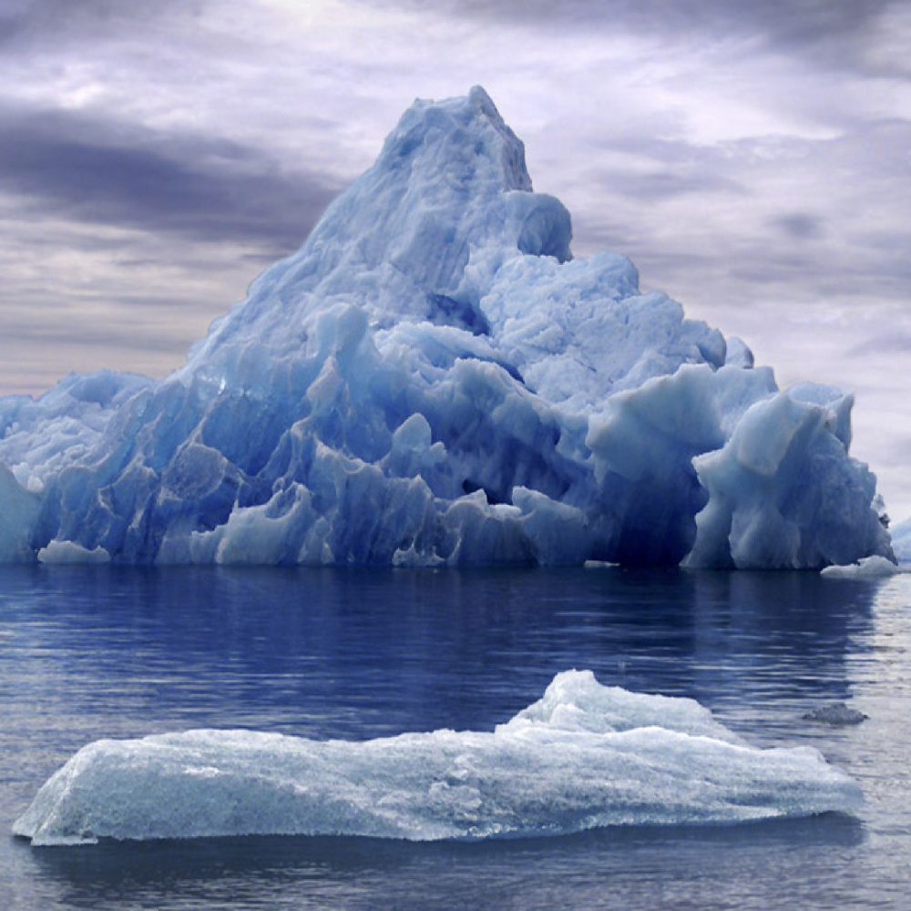

Sono una naturalista e documentarista che esplora gli ambienti più remoti del pianeta. Da oltre 15 anni raccolgo immagini, storie e dati per sensibilizzare sull'importanza della biodiversità.
Alba nella foresta amazzonica, 2024
Ghiacciaio in Groenlandia, 2023
“Quella notte, nella giungla, il silenzio era totale. Poi, un battito d’ali. Un gufo raro, mai avvistato prima, si posò davanti a me. Ho scattato solo una foto. Ma quella foto è diventata un simbolo.”